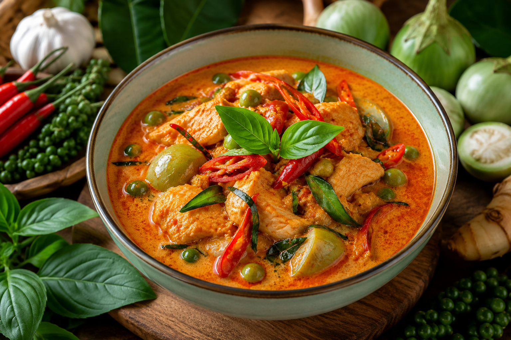
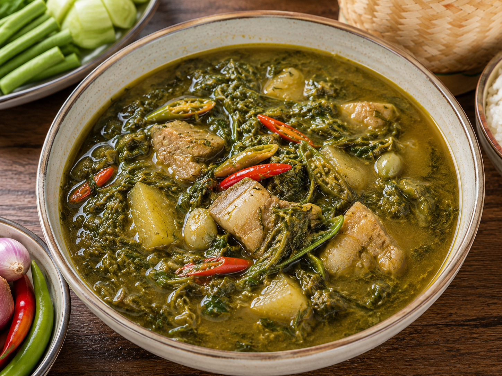
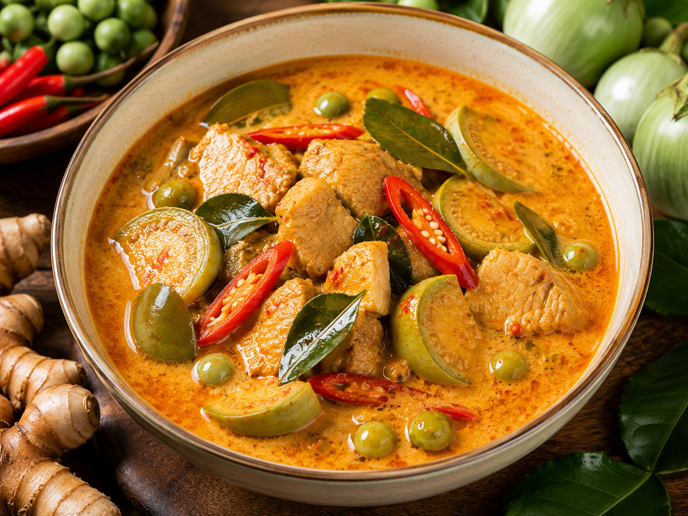

ประเภทแกง

แกงเผ็ด
นิยมใช้ของเค็ม หรือเปรี้ยว ๆ หวาน ๆ เป็นเครื่องแนม เช่น ปลาแห้ง เนื้อเค็ม ปลาเค็ม และแตงโม

แกงขี้เหล็ก
นิยมใช้หัวผักกาดยำเค็ม เป็นเครื่องแนม

แกงคั่ว
นิยมใช้ของเค็ม ๆ เปรี้ยว ๆ เป็นเครื่องแนม เช่น ปลาเค็ม เนื้อเค็ม ไข่เค็ม และผัดหัวผักกาดเค็ม

แกงมัสมั่น
นิยมใช้อาจาด ผักดองอบน้ำส้ม และถั่วลิสงทอดเคล้าเกลือ เป็นเครื่องแนม